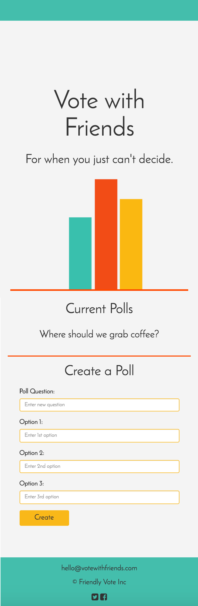
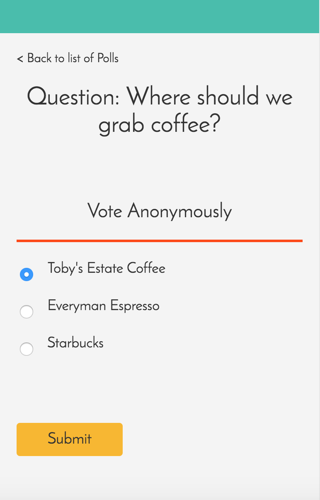

Design Question
Voicing a different opinion within a group of friends can be intimidating,leading to an inability for the group to make a decision or resulting in a decision with unhappy participants. How can we make group decision making easier and less stressful?
Design Values
- Fun
- Work in real time
- Allow for multiple polls to run at once
- Simple colors to maintain focus on data
Tech Stack
- Node backend
- Mongo data store via mLab
- Express web server
- Socket.io client to server communication
User Flow
Step 1: The first page allows users to see current polls, as well as create a new one. When polls are generated they recieve a unique url, to allow for multiple polls to run at once.
Step 2: Users access the second page either by clicking on a poll name from the main page, or by navigating to the poll's unique url. This url may be shared by the poll creater or other users.Users select one of the radio buttons and press submit in order to cast their vote.
Step 3: Once users vote they are redirected to the results page where they can see a bar graph tallying their groups votes. Because the data is sent via sockets as each new vote is cast the graph is updated.